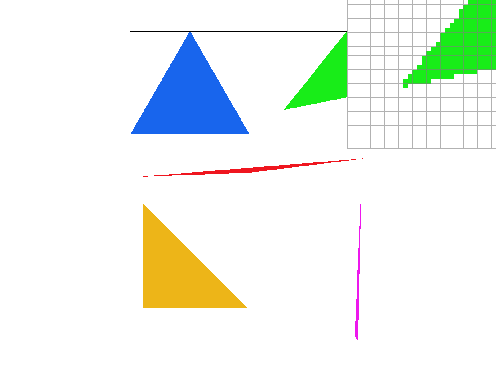
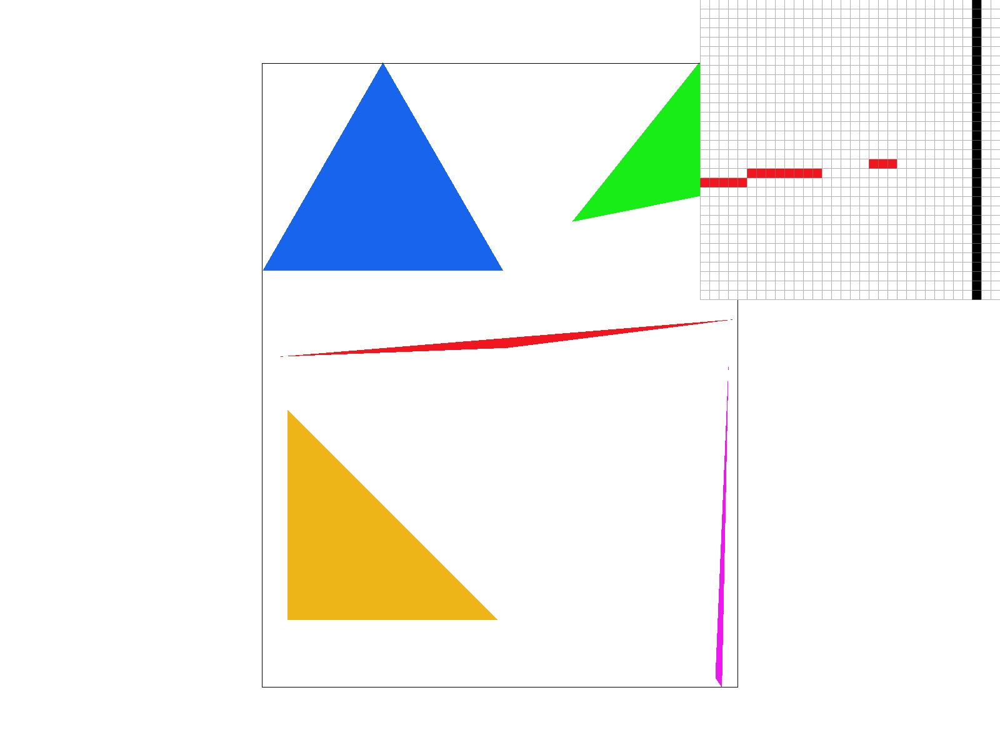
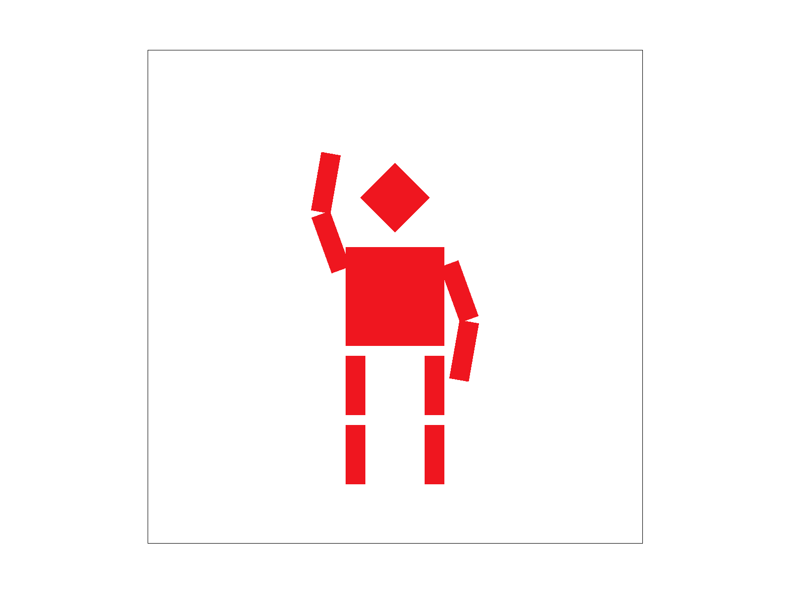
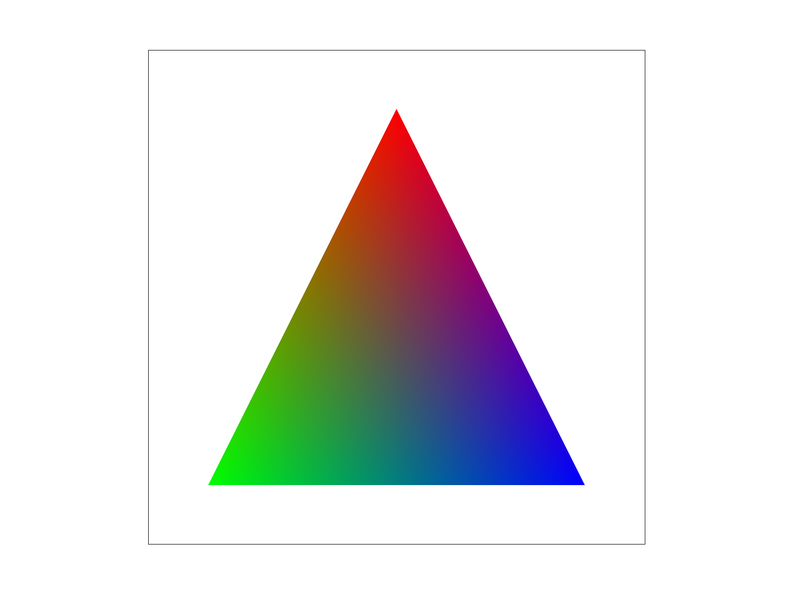
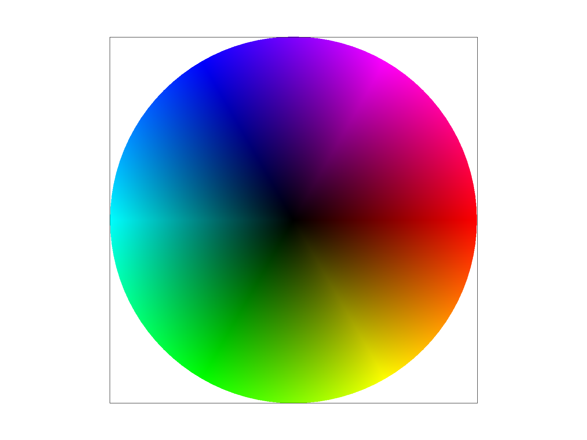
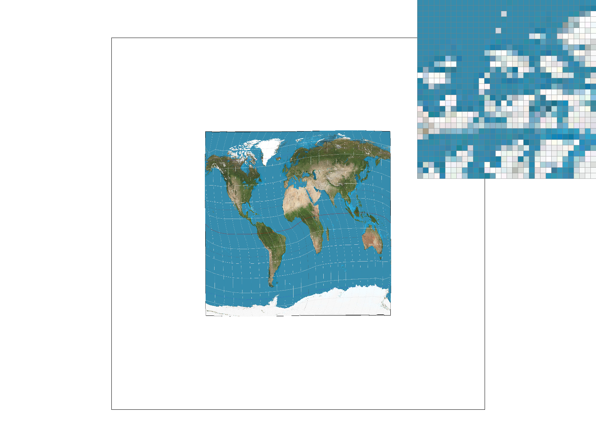
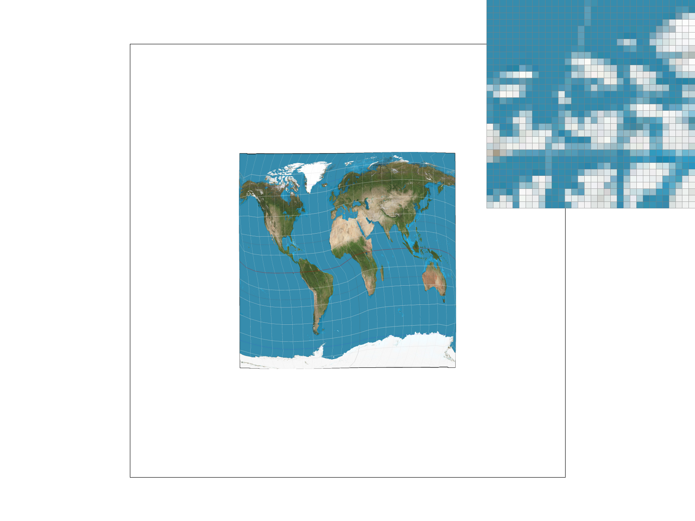
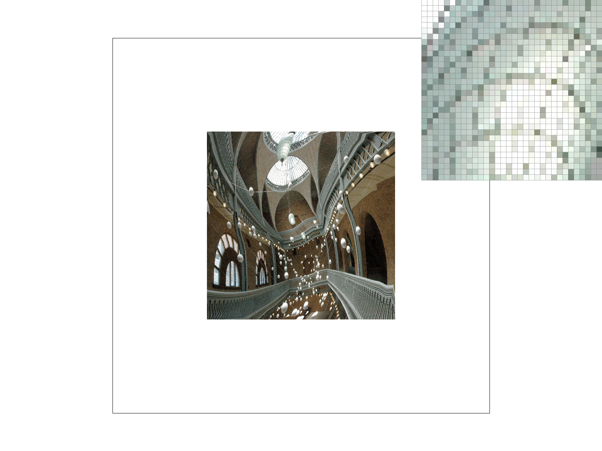
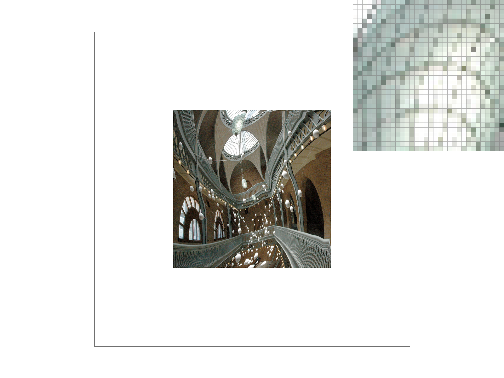

CS184/284A Fall 2026 Homework 1 Write-Up
Names: Jameson Liu, Justin Lee
Link to webpage: cal-cs184-student.github.io/hw1-jl-writeup/
Link to GitHub repository: github.com/cal-cs184-student/hw1-jl

Overview
We implemented the core components of a rasterizer, including triangle filling, supersampling, transformations, barycentric interpolation, texture sampling, and mipmap level sampling. Together, these techniques show how carefully chosen discrete samples can produce a smooth image. We also explored the tradeoff between sampling quality and computational cost by comparing the output at different settings in both the pixel inspector and the final images. Through this process, we learned how continuous geometry and texture coordinates are converted into discrete samples, and it was interesting to see how supersampling and mipmaps reduce the aliasing that occurs during that conversion.Task 1: Drawing Single-Color Triangles
To rasterize a triangle, we first compute its bounding box from the minimum and maximum vertex coordinates. For each sample position in that box, we determine whether it lies inside the triangle by performing an edge test with every edge. An edge test evaluates the signed 2D cross product between an edge vector and the vector from that edge to the sample. The sign of the result tells us which side of the edge contains the sample. If the three edge tests have the same sign, accounting for either clockwise or counterclockwise winding order, the sample is considered to be inside the triangle and is filled.This algorithm is no worse than checking every sample within the bounding box because each sample requires a constant amount of work (three edge tests and a sign check). Therefore, its runtime is
O(area of bounding box).

Task 2: Antialiasing by Supersampling
For supersampling, we store a sample buffer withsample_rate colors for every framebuffer pixel.
A sample rate of N is sampled as a square grid with sqrt(N) samples along each dimension.
Instead of evaluating triangle coverage only at the center of a pixel, we run the same edge tests at the center of every subpixel and write the covered samples into this buffer.
At the end of rasterization, we resolve each framebuffer pixel by averaging all of its samples.
Supersampling is useful because it can better represent pixels that are only partially covered. At one sample per pixel, a thin feature must be either fully present or absent, which creates jagged edges. With more samples, the averaged color represents the fraction of the pixel covered by the triangle. In the pixel inspector below, the 1 sample per pixel image has a visible discontinuity at the corner of the thin red triangle. Neighboring pixels switch directly between white and red. At 4 and 16 samples per pixel, pixels around both sides of that corner contain light-red partial-coverage values, so the transition is smoother. The 16 sample per pixel image gives the finest coverage estimate and therefore the smoothest edge, but takes the most computation.

Task 3: Transforms
We modified cubeman so that it is waving. We kept the original geometric style and body proportions, then used nested translations, rotations, and scales to modify the arm segments. The rotated arm pieces make the gesture clear while preserving the rest of the original robot.
Task 4: Barycentric coordinates
Barycentric coordinates are way to express a sample in a triangle as a weighted combination of its three vertices. The three weights add to one, and each weight represents how much the point is associated with one vertex. We compute the weights from triangle areas, then use the same weights to interpolate vertex attributes. In the image below, the source svg only consists of red, green, and blue vertices, but the interior of the triangle blends smoothly because every sample receives a weighted combination of those three colors.

Task 5: "Pixel sampling" for texture mapping
Texture mapping uses barycentric coordinates to interpolate an(u, v) coordinate for each covered sample of a triangle, then samples the texture at that location.
Nearest sampling chooses the texel containing the (u, v) coordinate, so it is cheap but can look blocky.
Bilinear sampling takes the four surrounding texels and linearly blends them according to the sample's position, producing a smoother result.
Nearest sampling produces sharp square texels, while bilinear sampling smooths their transitions. Increasing the sample rate additionally smooths triangle coverage and averages multiple texture lookups, so its effect is most visible along geometric edges and rapidly changing regions. As the sample rate increases, this averaging can also reduce the visible difference between nearest and bilinear sampling. The two methods differ most when a screen pixel falls between texels with noticeably different colors, especially when the texture is enlarged or reduced. Nearest sampling abruptly selects one texel, while bilinear sampling blends the nearby texels. In a large flat region where neighboring texels have similar colors, both methods produce nearly the same result.
|
 |
|
|
 |
|
Task 6: "Level Sampling" with mipmaps for texture mapping
Level sampling chooses which mipmap resolution to use for each sample. We compare the interpolated(u, v) coordinate at the sample with the coordinates at neighboring screen positions to estimate how many texels one screen pixel covers.
If the coordinate changes quickly, the pixel covers more texels, so we select a lower-resolution mipmap level.
Using this lower-resolution image prevents detail in a minified texture from turning into aliasing artifacts.
The renderer has three controls: pixel sampling (
P_NEAREST or P_LINEAR), level sampling (L_ZERO, L_NEAREST, or L_LINEAR), and sample rate.
With pixel sampling, P_NEAREST uses one texel lookup and is fastest, but can look blocky.
P_LINEAR blends four nearby texels, which costs more work but produces smoother results within a mipmap level.
With level sampling, L_ZERO always uses the full-resolution texture and does not use additional mipmap levels, but it can alias when the texture is minified.
L_NEAREST chooses the closest prefiltered mipmap level, which uses additional memory but reduces aliasing for minified textures.
L_LINEAR blends samples from the two nearest mipmap levels, making transitions between levels smoother at the cost of an additional texture sample.
Finally, increasing the sample rate averages more rasterization samples per pixel, improving edge antialiasing at the cost of more sample-buffer memory and texture-sampling work.
The image below makes the effect clear. With
L_ZERO, the renderer samples the detailed base image and produces noisy, blocky detail.
With L_NEAREST, it chooses a lower-resolution version of the image.
P_LINEAR also helps slightly by blending texels within the selected mipmap level, but the larger improvement comes from choosing an appropriate level with L_NEAREST.
Among the four configurations shown, combining L_NEAREST with P_LINEAR gives the smoothest result.
|
 |
 |
|
|
|